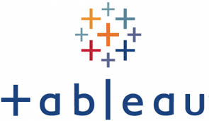

I conducted a comprehensive data exploration of the World Health Organization's Covid-19 statistics. In this project I conducted SQL navigation on a vast dataset of over 300,000 rows.
This hands-on experience not only deepened my understanding of managing large-scale datasets but also refined my
ability to derive insightful patterns from complex information.
In my data cleaning project in SQL,
I streamlined information by standardizing data formats, enhancing clarity and consistency.
I utilized functions like ALTER to standardize data formats,
JOIN to enrich property address data, and functions such as SUBSTRING, CHARINDEX, and PARSENAME
to efficiently break down and extract key information, ensuring a refined and organized dataset.

Explore my Tableau portfolio, where I showcase innovative data visualizations and analytics projects.
In this project, I obtained data from a survey completed by individuals within the data industry.
I leveraged DAX functions to derive insights, including the calculation of average salary and work-life balance,
among various other analyses. Feel free to explore the comprehensive findings.
In my Python project for my portfolio, centered around the fascinating realm of movies,
I harnessed the capabilities of Pandas, Seaborn, and NumPy to generate insightful visualizations.
Using scatter plots, I delved into correlations within the dataset,
offering a nuanced perspective on various movie-related factors.
Feel free to have a closer look at this cinematic exploration in my portfolio